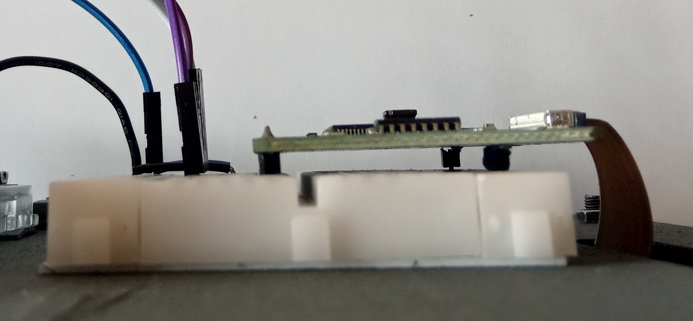

Assembly instructions
This page explains how to assemble the hardware components of the toy computer described in the book "Programming a toy computer from scratch".
Soldering
In order to use the Adafruit RA8875 driver board (hereafter called the "graphics card") you need to solder the header pins provided with it. Likewise, you need to solder the header pins provided with the level converter, which is required to connect the PS/2 keyboard. For this the easiest is to use a breadboard, and to plug the header pins in it first:
{kind=link}
Use 15 pins for the graphics card, and two 6-pins rows for the level converter. The graphics card has pins on only one side. To provide support on the other side, plug two header pins with their top part cut, as shown above. Then put the cards on these pins, and solder them in place. If you have never done any soldering before, watch tutorials online, and practice with an empty perfboard first. To avoid having to buy a soldering station, go to a makerspace if you can. You can also get some advice there.
Connecting the screen
Once the graphics card is in place and soldered, connect it to the Arduino and to the screen with jumper wires as described in the book (in Figures 10.6), and as illustrated in the following photos.
Connections to the Arduino
- Overview of the connections between the Arduino (top) and the graphics card (bottom):
- The connections on the Arduino side:
- The connections on the graphics card:

- A side view of the graphics card, showing the two partially cut header pins (right) used to maintain it parallel to the breadboard: 
{kind=link}
{kind=link}
{kind=link}
Connections to the screen
Connect the 40-pin connector of the LCD panel to the graphics card as illustrated below (notice the "1" and "40"
numbers). For this, slide out the black "ears" on each side of the white connector, insert the flat cable, and
slide the ears back in.
Connecting the keyboard
Once the level converter is in place and soldered, connect it to the Arduino and to the keyboard with jumper wires as described in the book (in Figures 11.4), and as illustrated in the following photos.
Connections to the Arduino
- Overview of the connections between the Arduino (top) and the level converter (bottom right):
- The connections on the Arduino side:
- The connections on the level converter:
{kind=link}
{kind=link}
{kind=link}
Connections to the keyboard
Connect the level converter to the PS/2 side of the USB to PS/2 plug adapter provided with the keyboard, as shown in Figure 11.4 in the book.
{kind=link}
The PS/2 pins are too close to connect them all with jumper wires. To solve this, remove the black plastic case around one of the wires (here the brown one, connected to the DATA pin; the black, red and orange wires are connected to the GND, +5V, and CLK pins, respectively):
{kind=link}
Computer Case (optional)
To make your toy computer easier to use it is recommended to attach the above components to a single support. One possibility is to use the following blueprint. It is designed to be cut in a panel whose thickness is 5mm. If you have access to a laser cutting machine, you can use a poplar plywood panel for that.
{kind=link}
Attach the Arduino and the breadboard on the back of (A), put (B) on the front, with the screen inside it, and pass the 40-pin flat cable from the LCD through the hole in (A).
{kind=link}
Then put (C) on top of (B). Finally, use (D), (E), and (F) as a tilted support for these assembled components. Use the remaining parts to attach the PS/2 to USB adapter on (E), with the USB port on the outside:
{kind=link}